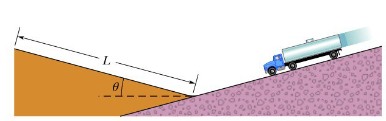

Gustavo Barboza Blanco - C10870
Un camión sin frenos se mueve hacia abajo con una velocidad de \(130 km/h\) justo antes de toparse con una rampa de pendiente positiva sin fricción, su ángulo de inclinación es de \(\theta = 15 °\). La masa del camión es de \(1.2\cdot10^{4} kg\). a) ¿Cuál es la distancia \(L\) mínima que debe tener la rampa para que el camión se detenga momentáneamente justo a los \(L\) metros? b) ¿Qué sucede con la distancia \(L\) si se disminuye la masa del camión? c) ¿Qué sucede con la distancia \(L\) si se disminute la velocidad?
Por conservación de la energía tenemos: \(\Delta T + \Delta U = 0\) lo cuál implica:
\(\frac{1}{2}m(v^2-u^2)+mg(H-h)=0\)
Donde \(v\) corresponde a la velocidad final, \(u\) velocidad inicial, \(H\) altura final y \(h\) altura inicial. Note que tanto \(v\) como \(h\) se anulan, pues la velocidad final es 0 y tomamos el origen del marco de referencia justo donde el camión empieza a subir la pendiente positiva, además \(H = Lsin(\theta)\). De esta forma se tiene que:
\(L=\frac{u^2}{2gsin(\theta)}\) [*] ; Para iniciar el cálculo de dicha longitud es necesario que presione el botón "iniciar", vea que primero debe otorgar la velocidad inicial \(u\) en km/h y el ángulo de la rampa en grados, el programa realizará la conversión a m/s, y posteriormente realizará el cálculo de la longitud correspondiente.
Inicialmente se espera que el usuario otorgue los datos propuestos por el enunciado del problema, sin embargo es una buena oportunidad para experimentar con distintas variaciones de velocidades e inclinaciones.
Respuesta:
Note que la ecuación [*] es totalmente independiente de la masa, por lo que no importa el valor de dicha variable.
Observando la ecuación [*] es sencillo ver que si se reduce la velocidad entonces la longitud tiene a decrecer, esta es la oportunidad ideal para que el usuario pueda "jugar" con distintos valores de velocidad, (manteniendo el ángulo constante), y ver cómo cambia la longitud.